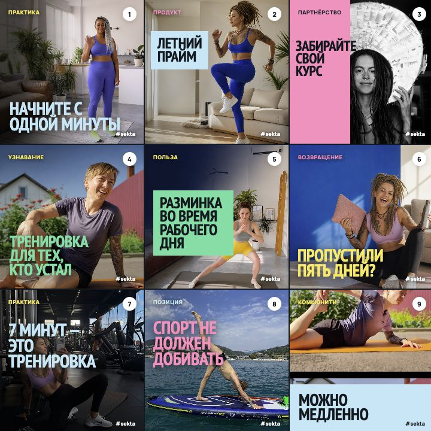

Тело
Телоне ленитсяДЕЛАТЬ
Читается в сетке
- 2–4 короткие строки
- решительный контраст
- лицо и действие открыты
- один цветовой акцент
Один рабочий экран для команды: выбрать идею, собрать обложку, проверить ленту и поставить материал в план.
Снято из Instagram 20 августа · три закреплённых + свежие публикации
Сейчас: продуктовые обложки, живые фото и Reels смешаны; яркий синий и розовый работают как точечные акценты.
Семь опорных выходов
Проверяем доступные публичные показатели
Снимки сохраняются в этом браузере; общая версия команды остаётся в опубликованной системе.
Редакционная версия · 18–23 августа
Шесть публикаций собраны как единая серия: эмоция, действие, позиция, игра, узнавание и практика. Нажмите на любую обложку — справа откроется полный разворот.
Логика: дать пользу, рассмешить узнаваемостью, показать характер бренда и закончить живым опытом людей.
Одна шрифтовая база и одна девятка, но разные способы защитить заголовок: затемнение, плотная плашка, split, фотоокно и чистый кадр. Сравниваем не свотчи, а читаемость в настоящей ленте.
Во всех версиях одинаковые фотографии, композиционные задачи и пара PT Sans Narrow × Manrope.
Выберите формат и обновляйте подборку, пока не найдёте тему, которую хочется произвести. Готовые Reels можно сразу открыть как полный бриф.
Фильтруйте по цели и исходникам; справа откроется сценарий, CTA и визуальная режиссура.
Видео не обязано буквально иллюстрировать каждое слово. Оно должно поддерживать состояние и не выглядеть случайными обоями.
Главное изменение
Тест простой: уменьшите её до ячейки в сетке 3×3. Если хук превратился в бледное пятно, человек его не прочитает — каким бы красивым ни был исходник.
ТелоНемного о том, почему иногда сложно начать заниматься спортомНЕ ДЕЛАТЬХук — максимум 6–8 слов на обложке. Остальное живёт в самом Reel и подписи.
Белый на тёмном, чёрный на лайме или плотная розовая плашка. Бежевый на бежевом запрещён.
Первый момент уже движется. Не логотип, не заставка, не поза «я сейчас начну говорить».
Показываем действие, состояние и живой опыт. Не body check, не стыд, не «исправляем проблемную зону».
Один смысловой поворот на 2–4 секунде. Резать по мысли, а не ради клипового мельтешения.
Крупно, в одной безопасной зоне и с фоном. Человек должен понять Reel без звука.
Правило сетки: на каждые три публикации — максимум одна чисто типографическая обложка. Остальные две держатся на живом человеке и движении.
Не контент-план ради плана
Неделя должна привести нового человека, дать ему узнать себя, доказать пользу, показать живых людей и только потом сделать предложение.
Тело не ленится. Оно голосует против вашего плана.
Смотрим: охват неподписчиков, пересылкиЧто делать, если пропустили пять дней.
Смотрим: сохранения / охватЯ работаю в фитнесе и всё равно иногда не хочу.
Смотрим: комментарии, ответы, визиты в профильЧетыре человека перед домашней тренировкой.
Смотрим: отметки и пересылкиПочему люди возвращаются на двенадцатый день.
Смотрим: клики и заявкиРитм тестирования
Каждую неделю тестируем один новый хук или формат как Trial Reel, а через 24 часа сравниваем удержание, пересылки и охват неподписчиков с предыдущими тестами. Победителя публикуем всем или повторяем его механику.
Меняем только хук, длительность или визуальную подачу.
Для охвата — пересылки и неподписчики; для пользы — сохранения.
Записываем, что повторить в следующем Reel, а не просто «зашло / не зашло».
Свежий снимок профиля, снятый из авторизованного Instagram 20 августа 2026 года.
Три закреплённых публикации и девять следующих карточек показаны в том же порядке, что в профиле.
Сверить профиль →Сразу соберите визуал: напишите хук, выберите фотографию из медиатеки и настройте композицию. Идеи и сборка карусели находятся ниже.
1080 × 1350 · система #Sekta входит в PNG
 @sektaschool
Пропустили пять дней? Ничего не сломалось
10 слайдов · сохрани
@sektaschool
Пропустили пять дней? Ничего не сломалось
10 слайдов · сохрани
Кликните по тексту на обложке и тяните мышью
Смотрите на хук в масштабе ячейки: читается ли он сразу и не сливается ли с соседними публикациями.
Нажмите на идею — под карточками раскроются настройки и сценарий.
Выберите карточку, чтобы развернуть тему.
Шрифт остаётся стабильным, а ритм создают фото, плашки и разные сцены размещения.
Компактный обзор серии. Текст можно поправить здесь, а фото, шрифт, кегль и положение — в покадровом монтаже.
Финальная проверка после сборки: светлое фото, крупный хук, плашки и четыре акцентных цвета.

Полная библиотека обложек
Здесь мы не верстаем карусель целиком. Выберите фотографию и текст, а затем сравнивайте все гарнитуры на одной и той же реальной обложке 4:5 — строчные и КАПС оцениваются отдельно.
Выберите идею, получите редактируемый черновик лонгрида, соберите обложку из всей медиатеки и разложите текст по слайдам.
Кликните по тексту на макете и тяните мышью
Все изменения видны на макете сразу
Сгенерируйте текст из выбранной идеи или вставьте свой. Всё можно править вручную.
Откройте серию, сделайте копию или экспортируйте структуру.
Полный каталог из 16 коллекций · оригиналы не изменены
1059 уникальных фото · 21 дубль скрыт.
Черновик хранится в этом браузере
Добавляйте фото из медиатеки, меняйте порядок и смотрите ритм будущих публикаций.
Редакционный календарь
Новое сверху, как в Instagram
Соберите 6–9 обложек: так проще увидеть, где подряд стоят текстовые карточки или похожие крупности.